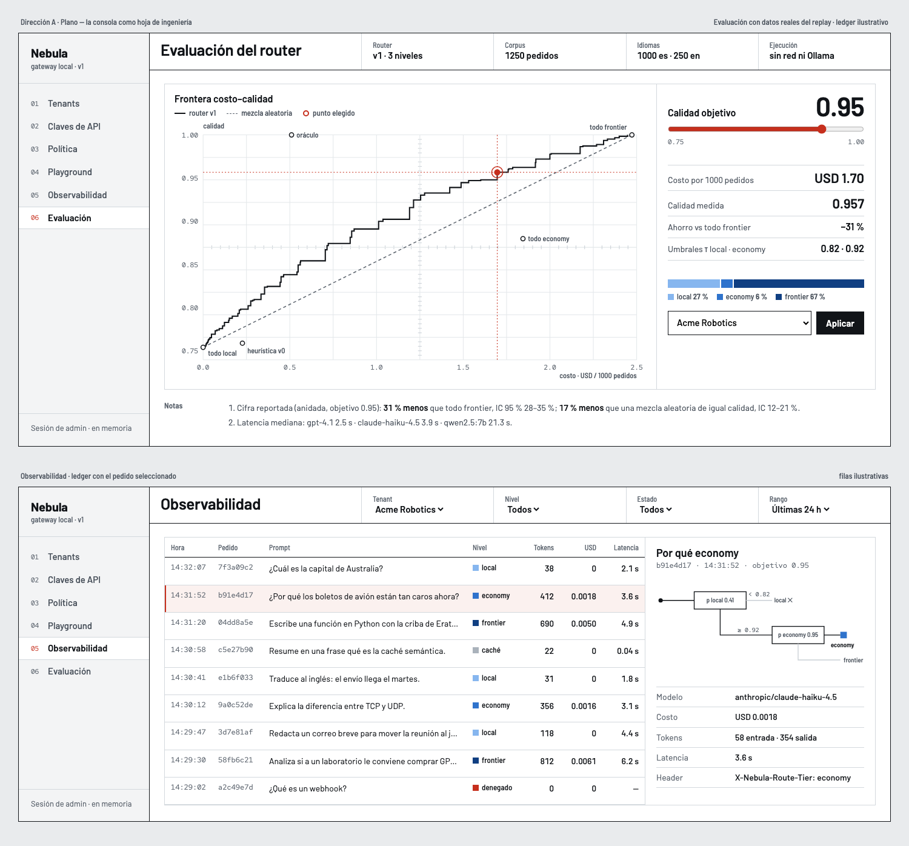
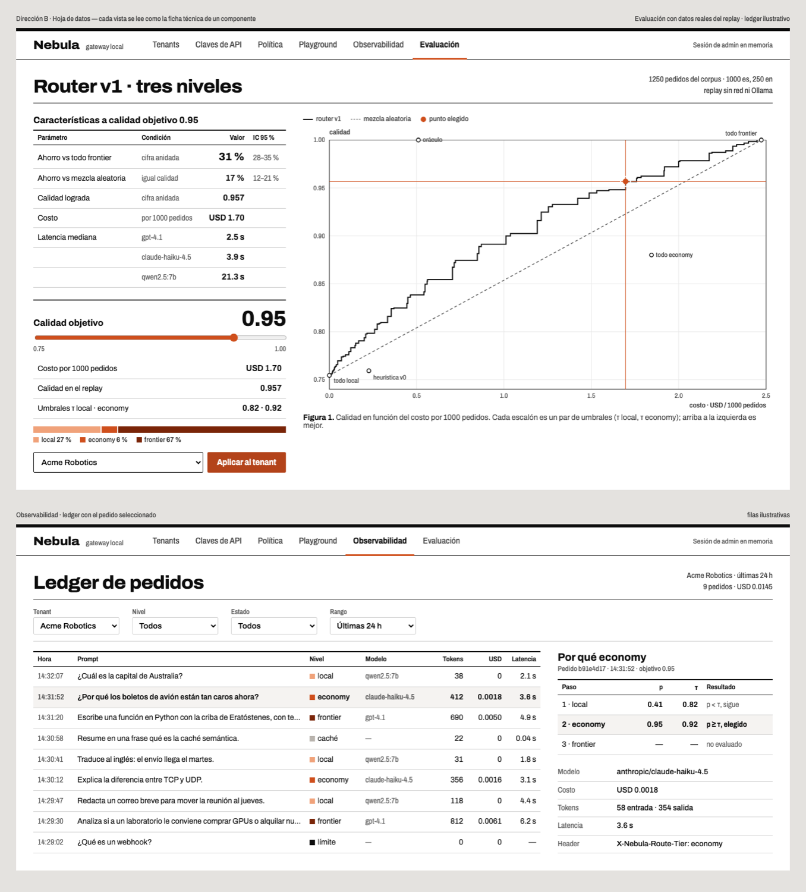
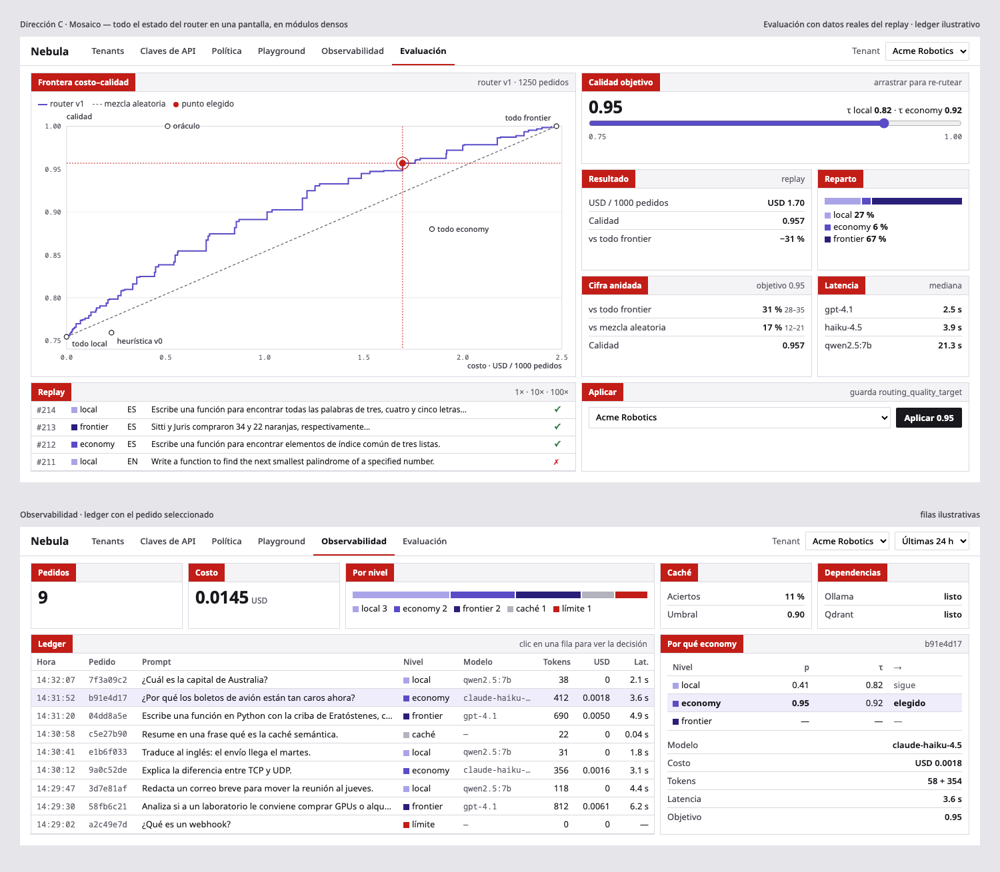

Nebula · tres direcciones visuales
Mismas dos pantallas (Evaluación y Observabilidad) en cada dirección, con los números reales del replay (USD 1.70, calidad 0.957, −31 %). El slider funciona. Las filas del ledger son ilustrativas.

A · Plano
La consola como hoja de ingeniería: rótulo de plano arriba, grilla de osciloscopio, la decisión dibujada como un camino de señal.
- Mundo
- Tinta negra sobre blanco, líneas de 1 px, esquinas rectas, riel gris claro. El rojo de corrección marca solo lo que eligió el operador.
- Tipografía
- Barlow (rotulado técnico tipo DIN) + Red Hat Mono solo para ids y ejes.
- Niveles
- rampa azul ordinal (local → frontier) + rojo de selección
- Firma
- "Por qué este nivel" como esquema: pedido → p local < τ → p economy ≥ τ → economy.
- Riesgo
- Si se exagera el rótulo de plano se vuelve disfraz; hay que mantenerlo en el encabezado y el esquema, no en cada tarjeta.

B · Hoja de datos
Cada vista se lee como la ficha técnica de un componente: tabla de características con condición e IC, curva típica con "Figura 1".
- Mundo
- Blanco, filete negro grueso arriba, tablas con reglas finas, un solo color cálido. Pasa directo a Word: parece una figura de la tesis.
- Tipografía
- Archivo con eje de ancho: expandida en títulos, angosta en tablas y rótulos.
- Niveles
- rampa bermellón ordinal; el acento es el mismo tono
- Firma
- La cascada de decisión como tabla paso · p · τ · resultado, con la fila ganadora marcada.
- Riesgo
- La más cercana a lo que espera un jurado (familiar); puede sentirse más documento que herramienta si las tablas no responden al clic.

C · Mosaico
Todo el estado en una pantalla, en módulos densos con pestaña roja, al estilo de los portales japoneses de alta densidad.
- Mundo
- Blanco, módulos con borde gris fino y cabecera con pestaña roja, texto de 13 px, nada de aire decorativo.
- Tipografía
- Noto Sans + Noto Sans Mono para ids.
- Niveles
- rampa violeta ordinal + rojo de pestaña
- Firma
- Evaluación entera sin scroll: frontera, control, resultado, cifra anidada, latencia y replay a la vez.
- Riesgo
- Texto chico: en una captura reducida para Word puede quedar ilegible; las pestañas rojas compiten con el rojo de error.
También está la salida estándar: consola tipo Vercel/Linear (Geist, grises neutros, un acento azul). Es la más segura y la menos memorable; se puede pedir en lugar de las tres.